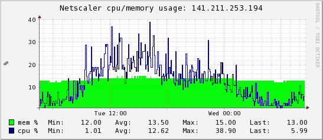
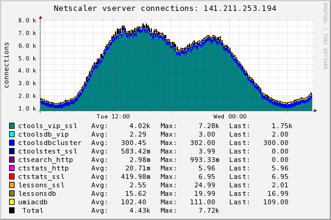
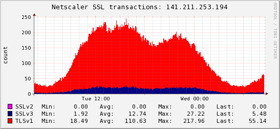
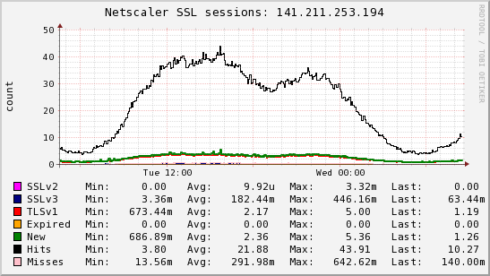
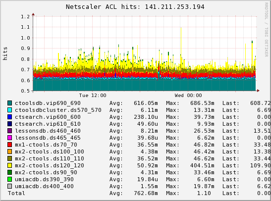

| [Login] |
Netscaler ns2.ds (141.211.253.194) | [Home]
[RCS
Log] 2010-04-28 08:30:46 Refreshing in 29m 29s |
[Past 28 Hours] [Past Week] [Past Month] [Past Quarter] [Past Year] [Past 2 Years]
|  |  |
|  |  |
|  |
 means
there is no info to draw a graph for the selected time-period
means
there is no info to draw a graph for the selected time-period